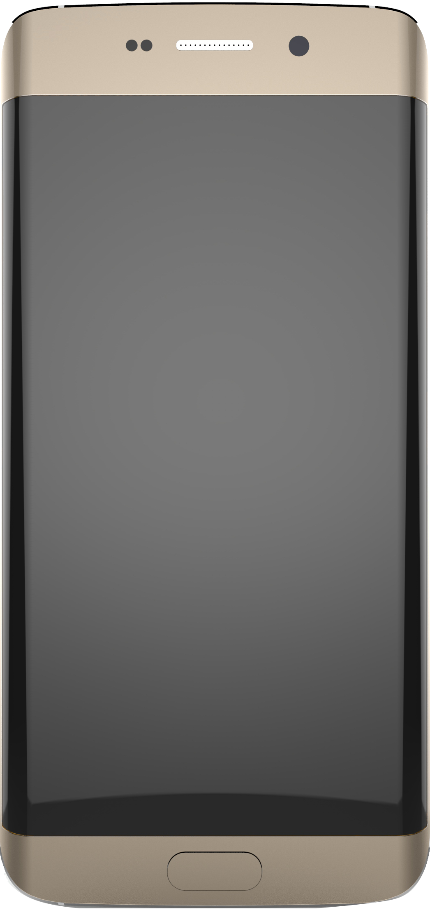

<ion-content>
  <div class="ion-padding">
    <div class="con">
      <div class="animated zoomInLeft delay-2s">
        <div *ngIf="angles.ori == 'y' && !angles.flat" class="nesto">
          <div style="transform: rotate(90deg);">
            
          </div>
          <p *ngIf="angles.orientation.type == 'landscape-primary'">Y:{{angles.y}}&#176;</p>
          <p *ngIf="angles.orientation.type == 'landscape-secondary'">Y: {{(angles.y > 0 ? angles.y - 180 : angles.y + 180)}}</p>
        </div>
        <div *ngIf="angles.ori == 'x' && !angles.flat" class="nesto">
          <div style="position: relative; overflow-y: hidden;">
            
            <div style="width:50px; height: 50px; border: 1px solid black; border-radius: 50%; position: absolute; transform: translateY(-50%);"></div>
          </div>
          <p>X:{{angles.x | absolute}}&#176;</p>
        </div>
        <div *ngIf="angles.flat">
          <p>Z: {{(angles.z-90) | absolute}}&#176;</p>
          <p>ZX: {{angles.xz | absolute}}&#176;</p>
        </div>
      </div>
      <div [ngClass]="{'container':true, 'container-circle':angles.flat}" class="animated fadeInDownBig slow">
        <div [ngClass]="{'bubble-container': true, 'bubble-container-circle': angles.flat}">
          <div class="bubble" appBubbleLevel>
            <div class="bubble-cover"></div>
          </div>
        </div>
      </div>
    </div>
  </div>
</ion-content>
